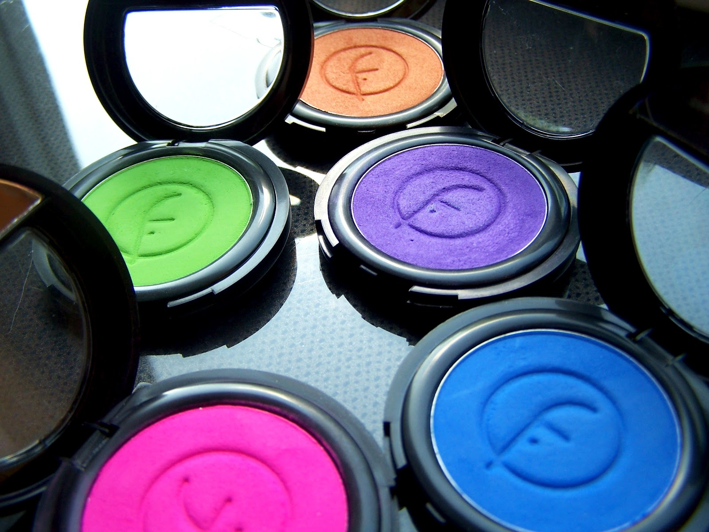
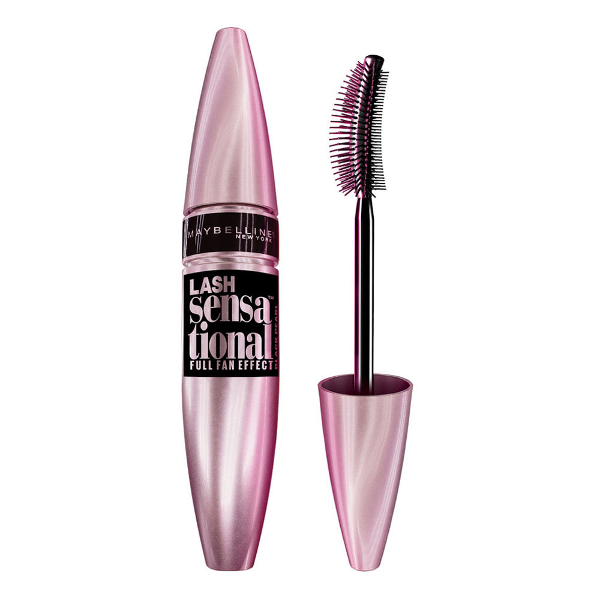
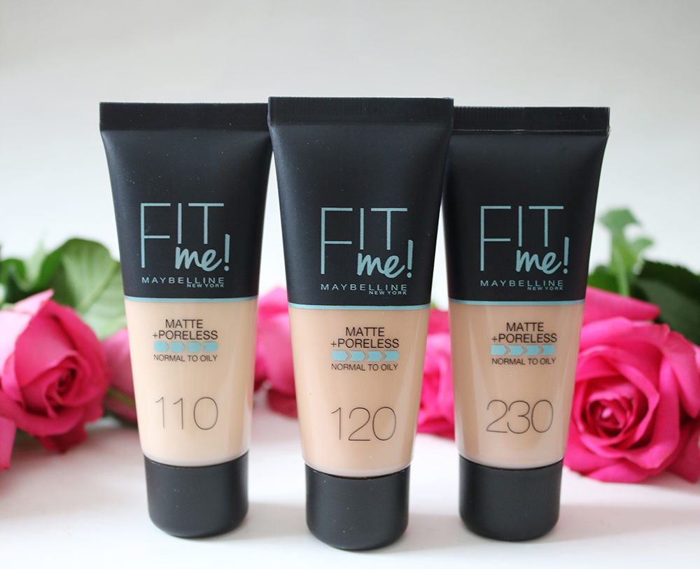
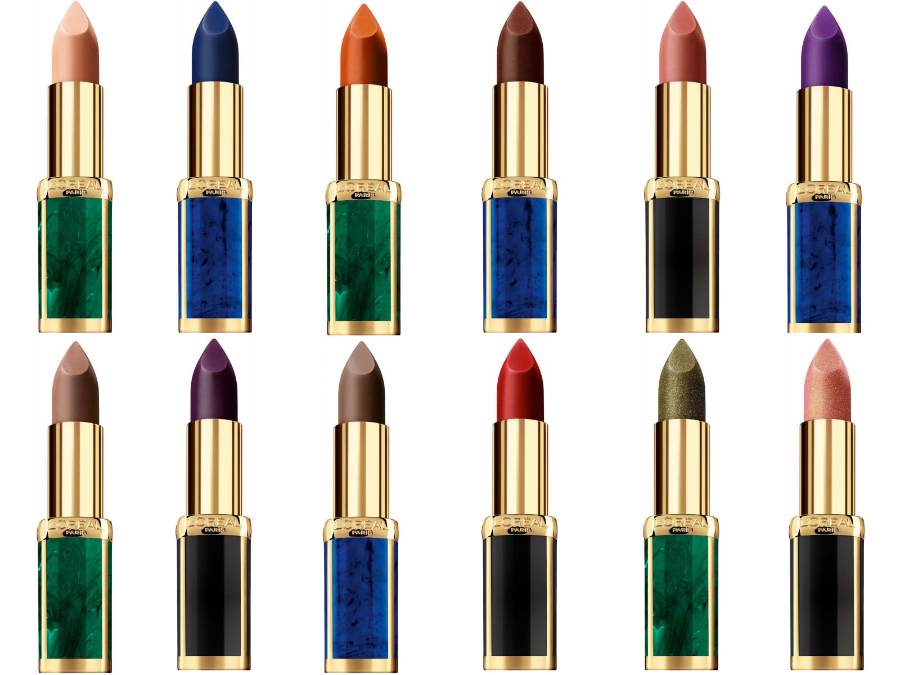
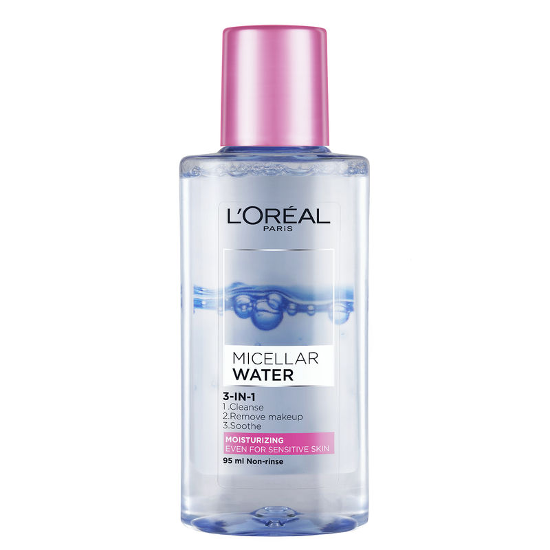
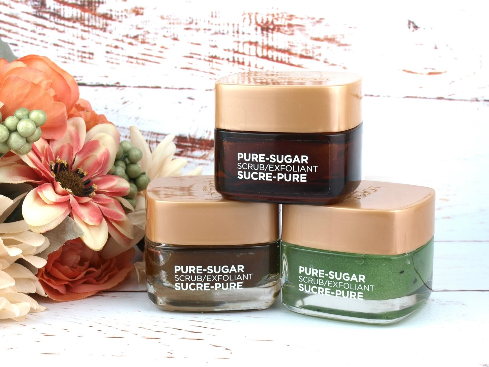
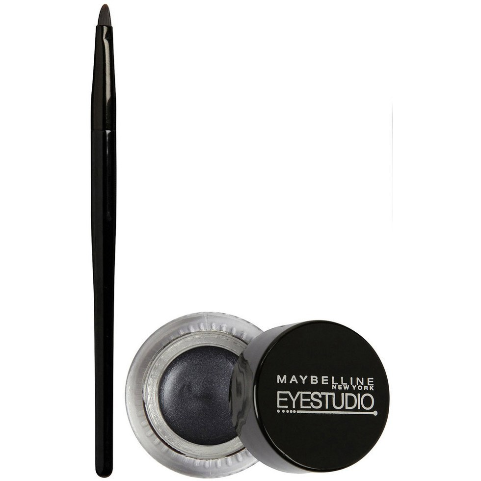

Make-up&Beauty Secrets

Flormar Neon Eye Shadow
The Flormar Neon Eyeshadow series has attracted my attention with easy to apply and affordable price.
We can apply this eyeshadows in the morning quickly and get a healthy and radiant facial appearance.

Maybelline Lash Senstional Mascara
The Maybelline Lash Sensational Mascara helps add lenght and volume your lashes. It is my favorite.
This mascara has an effect all day long. Also, there is no feeling weight on your lashes.

Maybelline Fit Me Foundation
I can say that it's the best foundation i've ever used with a silky texture and matte finish.
When you apply in the morning, until the evening your skin doesn't become oily.

L'Oreal Paris Color Riche x Balmain Lipstick
These lipsticks are very easy-to-apply and they are creamy. They are quite lasting so
there is no need to refresh during the day. Of course my favorite is "Legend 902"

L'Oreal Paris Micellar Water
Especially sensitive skin people can use with ease. It definitely doesn't irritate your skin
and remove your make-up easily. Also it makes your skin better in regular use.

L'Oreal Paris Sugar Scrubs
L'Oreal Paris Sugar Scrubs removes dead skin from the skin and provides a smooth skin sensation.
Also, in my opinion, Sugar Scrubs is the best idea for black spots on skin.

Maybelline Eye Studio Gel Eyeliner
This eyeliner is better than its competitors with its implementetion and structure.
Even a human who has no dexterity can use it easily.
Click Here to View How to Use
Who Are We?
Business women are exposed to difficulties
in their private lives as well as the difficulties
they experience in their business life.
We help business women with makeup,
beauty
and personal care tips, and try to make their lives a little easier.
'cause women have to run the world!